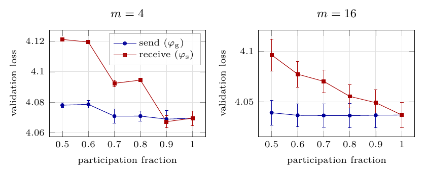

CODEC-FM @ NeurIPS 2026 · Tiny Paper
Decentralized training keeps replicas in sync by periodically averaging a random subset of their weights. Every guarantee for this assumes each replica both contributes to the average and receives the result. In a real system those are two network events that fail independently — and are already logged as two separate counters. We asked which half the guarantee actually needs.
We compute one averaging round exactly, for an arbitrary weight configuration,
with the two fractions separated: φg for send (contribute)
and φs for receive (adopt). The two are not interchangeable.
| Contraction of disagreement | Shift in the agreed value | |
|---|---|---|
| Receive failure | reduces it linearly | — |
| Send failure | absent at leading order | displaces the mean, diverging as φg → 0 |
So replicas still agree exactly when every replica receives, however few contribute. Send failures instead act on a second channel — the value replicas agree on — which standard mixing-matrix analysis cannot represent: double stochasticity is precisely the statement that a round preserves the mean, so that channel is zero by assumption, not merely unstudied.
What it costs you. The effective averaging rate
is p·φs, not p, so the admissible step size is
narrower than published. And a staleness corrector turns out to transfer
error between the two channels rather than remove it — it restores the mean and
increases the disagreement left standing.
Spend reliability budget on making replicas receive rather than
send; carry p·φs in guarantees rather than p; and
report a staleness corrector together with the disagreement it buys back.
The central claim is a closed-form identity — no GPU, no dataset:
git clone https://github.com/Pusse-01/sparse-averaging-participation
cd sparse-averaging-participation
pip install numpy
python -m theory.participationThat prints the closed form, checks it against Monte Carlo, and reproduces Table 1
of the paper: as a fixed 25% failure budget moves from the send path to the receive
path, the effective receive fraction ψ falls from 1.000 to 0.763 while the
predicted mean displacement moves the other way, 0.0125 → 0.0222. The two channels
move in opposite directions.

1/(m−1) prefactor, so it should
dominate at small m. We pre-registered that crossover and tested it: at
m=4, where the send channel is five times its value at m=16,
the receive path is still the costlier one. Reported as a negative result —
it means the design rule carries no m-dependent caveat.The identity is exact for arbitrary replica weights and arbitrary
m, with no distributional assumption and no replica homogeneity. It is a
one-round statement, not a convergence guarantee under heterogeneous objectives. The
empirical work is at 45M parameters with m ≤ 16 and replicas simulated
sequentially; read the deployment recommendation at that scale.